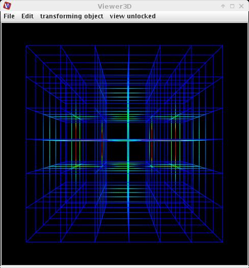

VOLUME READER
The module reads simple volumetric binary files.
Output data
The output field is regular. A geometry object of the field.
Computation parameters

A radio button panel defines the source of the input data either from file, URL or grid.
To select an input file click the browse button and select a file in the file browser or type the file name into the text input field below the button.
The geometric dimensions of input data are taken from file, from indices or they are normalized or user defined.
To reread the same input file select the reread button.
After reading in data from the input file there appears some basic information about the data:
Presentation parameters
Presentation tab contents are described in the common interfaces section unter the Presentation Panel entry.